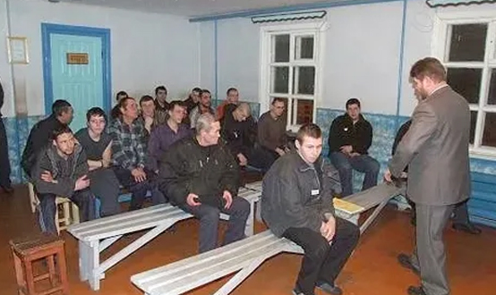

Общая характеристика преступлений против порядка управления
Преступления против порядка управления собраны в главе 32 УК РФ (ст. 317 — 330.2.).
Под порядком управления принято понимать установленный законодательством порядок осуществления органами государственной власти своих полномочий по регулированию общественных отношений.
Видовой объект данной категории преступлений составляют общественные отношения, складывающиеся в процессе нормальной управленческой деятельности органов государственного управления и местного самоуправления. Непосредственным основным объектом этих преступлений яв¬ляется нормальная деятельность отдельных звеньев управленческого аппарата. Дополнительным непосредственным объектом в большинстве составов выступает личность, ее жизнь, здоровье, честь и достоинство.
Виды преступлений против порядка управления
По непосредственному объекту все преступления данной категории можно подразделить на четыре группы:
1) преступления против лиц, осуществляющих и обеспечивающих законную управленческую деятельность:
- ст. 317 — посягательство на жизнь сотрудника правоохранительного органа;
- ст. 318 — применение насилия в отношении представителя власти;
- ст. 319 — оскорбление представителя власти;
- ст. 320 — разглашение сведений о мерах безопасности, применяемых в отношении должностных лиц правоохранительного или контролирующего ор¬гана;
- ст. 321 — дезорганизация нормальной деятельности учреждений, обеспечивающих изоляцию от общества;
- ст. 328 — уклонение от прохождения военной или альтернативной гражданской службы);
2) преступления против установленного порядка ведения, изготовления и обращения официальной документации, государственных наград и средств идентификации:
- ст. 324 — приобретение или сбыт официальных документов и государственных наград;
- ст. 325 — похищение или повреждение документов, штампов, печатей;
- ст. 325.1. — неправомерное завладение государственным регистрационным знаком транспортного средства;
- ст. 326 — подделка или уничтожение идентификационного номера транспортного средства;
- ст. 327 — подделка, изготовление или сбыт поддельных документов, государственных наград, штампов, печатей, бланков;
- ст. 327.2. — подделка документов на лекарственные средства или медицинские изделия или упаковки лекарственных средств или медицинских изделий;
- ст. 329 — надругательство над Государственным гербом Российской Федерации или Государственным флагом Российской Федерации;
3) преступления против неприкосновенности государственной границы и миграционной политики государства:
- ст. 322 — незаконное пересечение Государственной границы РФ;
- ст. 323 — противоправное изменение Государственной границы РФ;
- ст. 322.1. — организация незаконной миграции;
- ст. 322.2. — фиктивная регистрация гражданина Российской Федерации по месту пребывания или по месту жительства в жилом помещении в Российской Федерации и фиктивная регистрация иностранного гражданина или лица без гражданства по месту жительства в жилом помещении в Российской Федерации;
- ст. 322.3. — фиктивная постановка на учет иностранного гражданина или лица без гражданства по месту пребывания в Российской Федерации;
- ст. 323 — противоправное изменение Государственной границы Российской Федерации;
4) иные преступления против порядка управления:
- ст. 328 — уклонение от прохождения военной и альтернативной гражданской службы;
- ст. 330 — самоуправство;
- ст. 330.1. — злостное уклонение от исполнения обязанностей, предусмотренных законодательством Российской Федерации, в связи с признанием лица выполняющим функции иностранного агента;
- ст. 330.2. — неисполнение обязанности по подаче уведомления о наличии у гражданина Российской Федерации гражданства (подданства) иностранного государства либо вида на жительство или иного действительного документа, подтверждающего право на его постоянное проживание в иностранном государстве.
В большинстве указанных преступлений закон называет потерпевшего, обладающего специальными признаками представителя власти. В шести составах обязательным признаком является предмет преступления — официальные документы, штампы, печати, бланки, пограничные знаки, флаг и герб РФ.
Объективная сторона преступлений против порядка управления характеризуется одним обязательным признаком — деянием, так как по законодательной конструкции имеют формальные составы.
Субъект преступлений против порядка управления общий — физическое лицо, вменяемое, достигшее 16 лет. Исключение составляет уклонение от прохождения военной и альтернативной гражданской службы (ст. 328 УК), где субъект специальный — лицо, подлежащее призыву на эту службу.
Субъективная сторона характеризуется умышленной формой вины. Мотив и цель в ст.317, 318, 320 УК РФ также названы в качестве обязательных — цели воспрепятствования законной деятельности указанных лиц по охране общественного порядка и обеспечению общественной безопасности либо месть за такую деятельность.